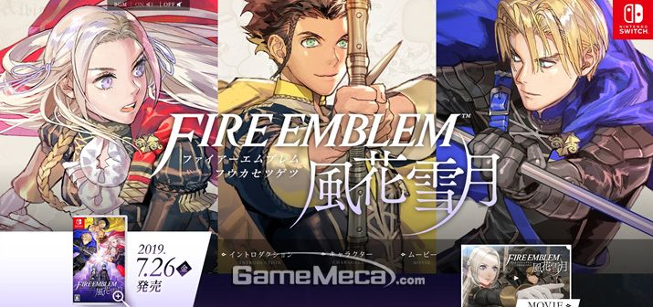
요즘 풍화설월을 하고있습니다.
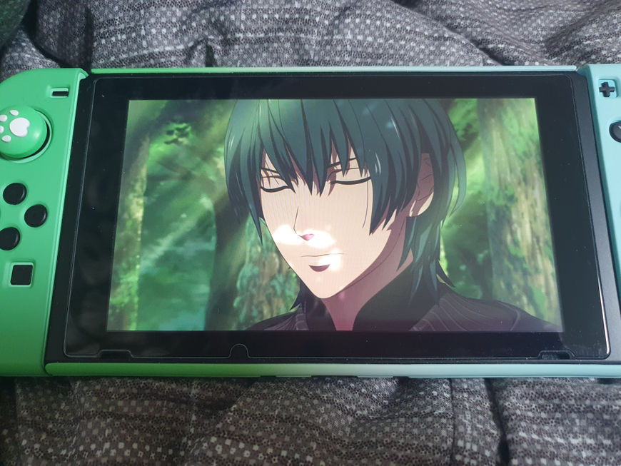
(스위치로 얼굴 인식 후 커스텀 캐릭터가 생성됩니다. 윗 사진이 제 캐릭터입니다.)
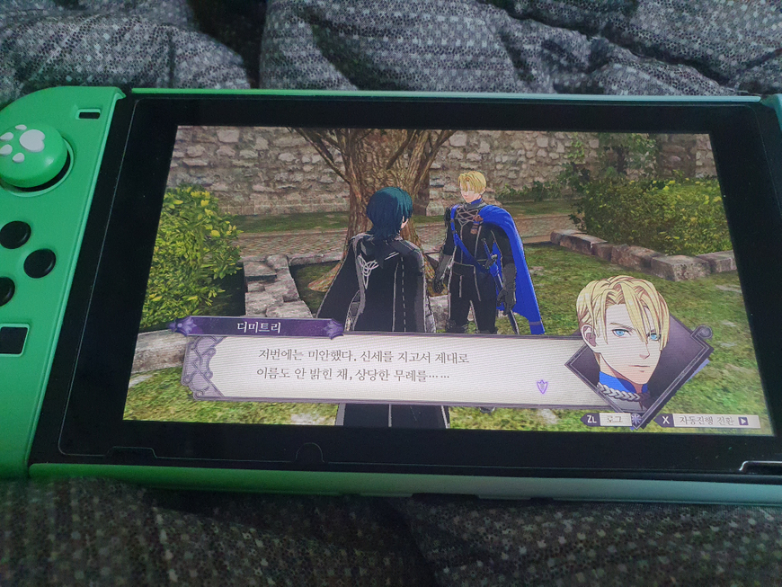
반말하지마.
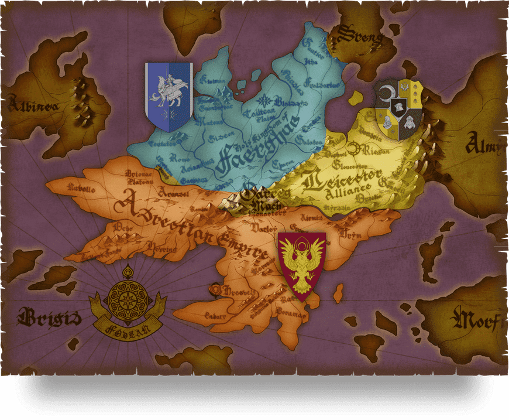
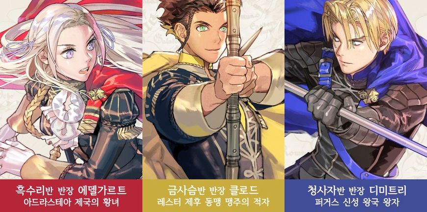
3개의 나라, 3개의 반, 그리고 당신의 이야기.
제국, 왕국, 동맹.
포드라 대지에 자리한 세 나라의 젊은이들이 모이는 사관학교.
교사로서 어떤 나라의 학생들을 선택하여 함께 싸우고 이끌 것인가.
당신의 선택과 포드라의 숙명이 3개의 서로 다른 미래를 만든다.(출처:나무위키)
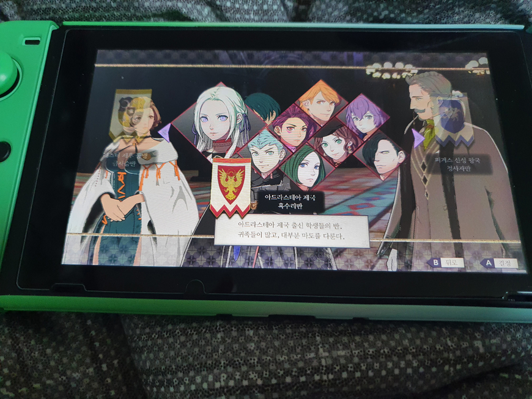
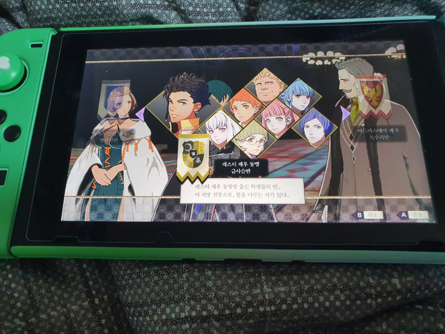
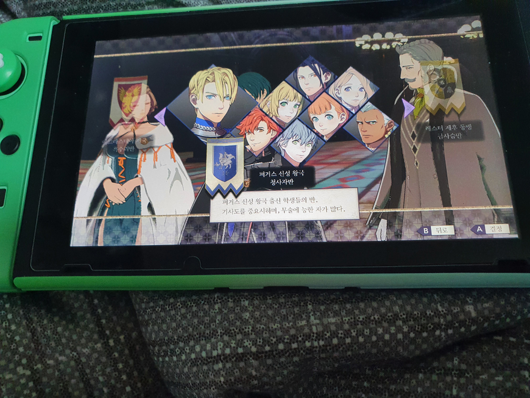
주인공은 사관학교에서 세 개의 반(제국, 왕국, 동맹)중 하나의 담임이 됩니다.
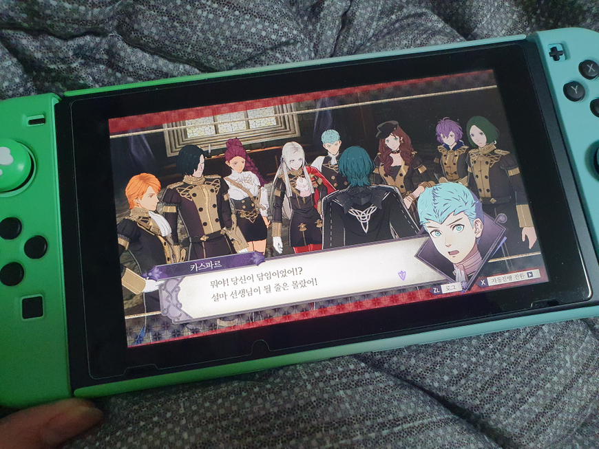
전 흑수리반 담임선생님이 됐습니다.
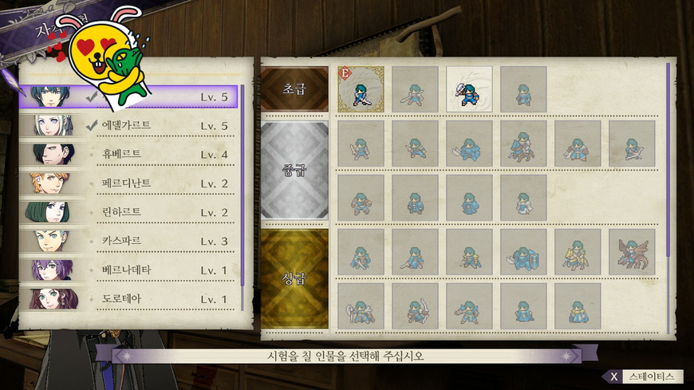
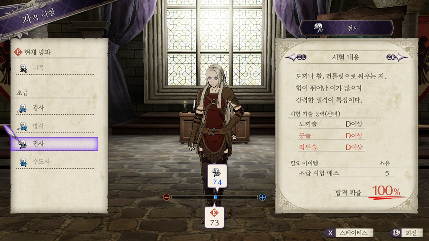
학생들의 능력치를 길러 병과시험을 볼 수 있습니다. 그 후 그 병과로 전직이 가능합니다. 병과들 수를 보십시오.... 압도적입니다.
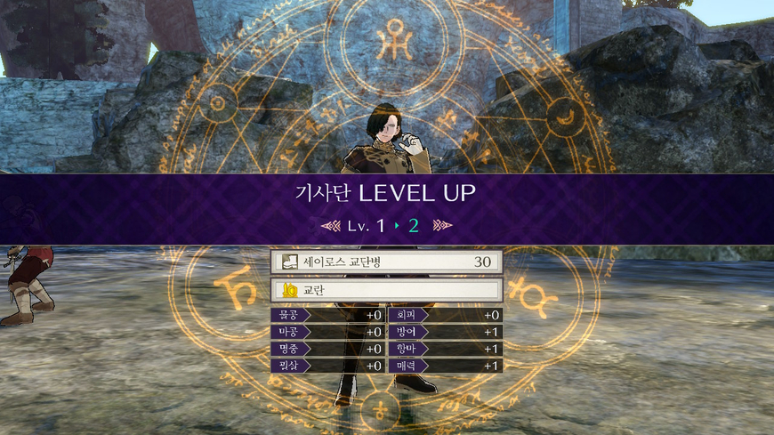
전투를 하며 레벨업을 하고
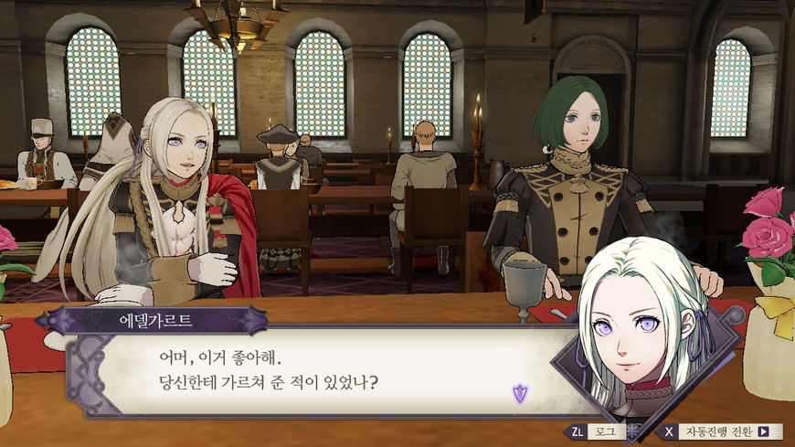
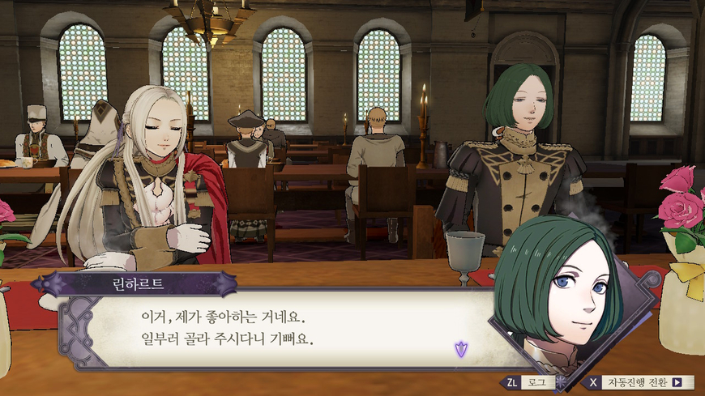
학생들과 식사를 같이 하며 친밀감을 높일 수도 있습니다.
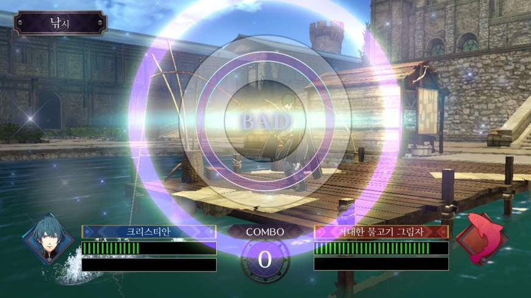
낚시도 가능합니다. 하면서 영웅전설 생각이 좀 났습니다.
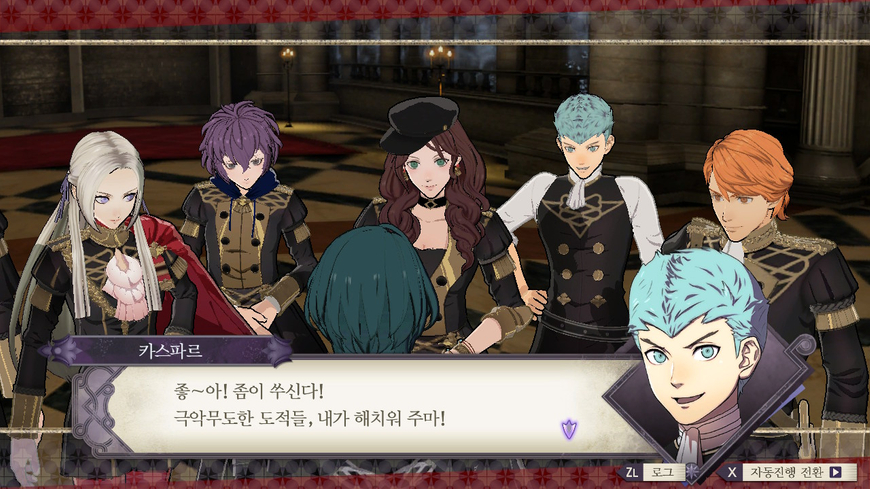
스토리를 진행하면서 담당 반 아이들과 같이 성장해나갑니다.
5시간밖에 안 해봤지만 갓겜느낌이 납니다. SRPG 시리즈중 역대 최고라고 평 받는 이유를 알 것 같아요.
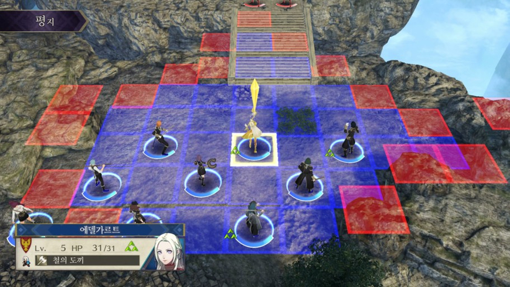
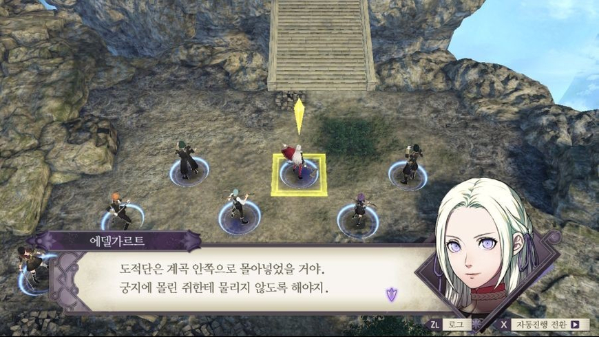
(전투장면입니다. 디지몬 서바이브도 이런 식인 것 같습니다.)
즐길 요소가 진짜 무진장 많습니다. 초반에는 너무 많아서 시스템에 적응하는데 시간이 꽤 걸릴 것 같아요. 저도 적응중입니다ㅜ. 그래도 전투 장면에 애니메이션을 넣은 것도 보는 눈이 즐겁고 일러스트들도 이쁩니다. 스토리도 선택한 반마다 다르고 각각의 스토리가 명작이라고 하던데 아직은 초반이라서 잘은 모르겠습니다. 그래도 완성도 높은 갓겜이라는건 초반임에도 불구하고 알 수 있습니다.
근데 다 좋은데 플탐이 미쳤더라구요.... 교수님 설마 모든 반 스토리 다 진행하신건 아니시죠.....? 스토리만 깨도 49시간인데... 설마 파고들기 다 끝내셔서 200시간 하신건 아니시죠....?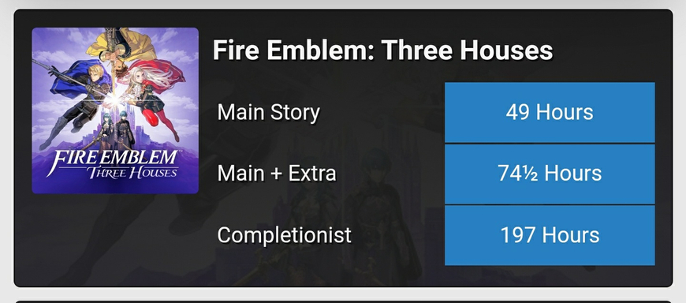
후원댓글 17개
댓글 17개 ▼